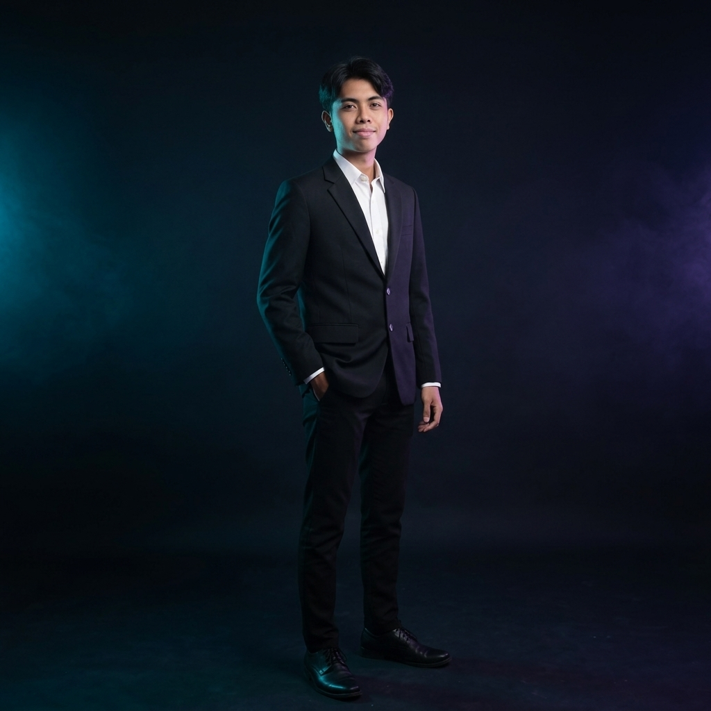
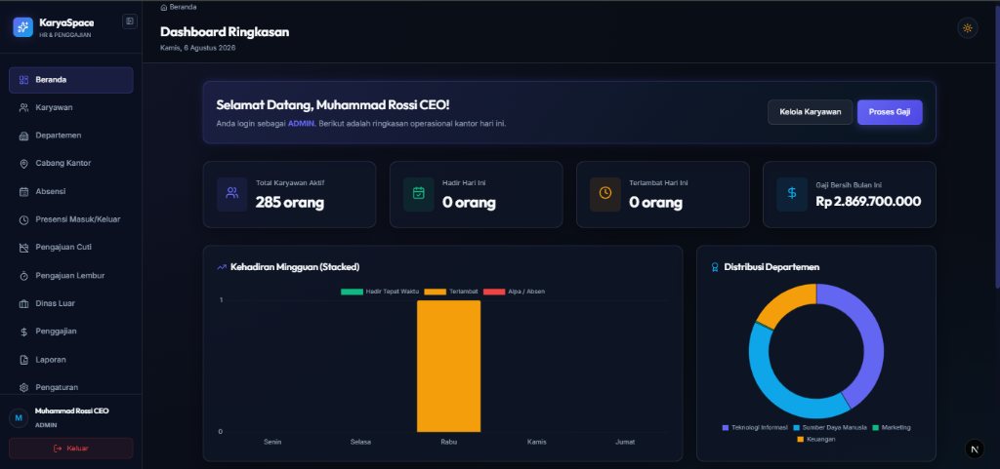
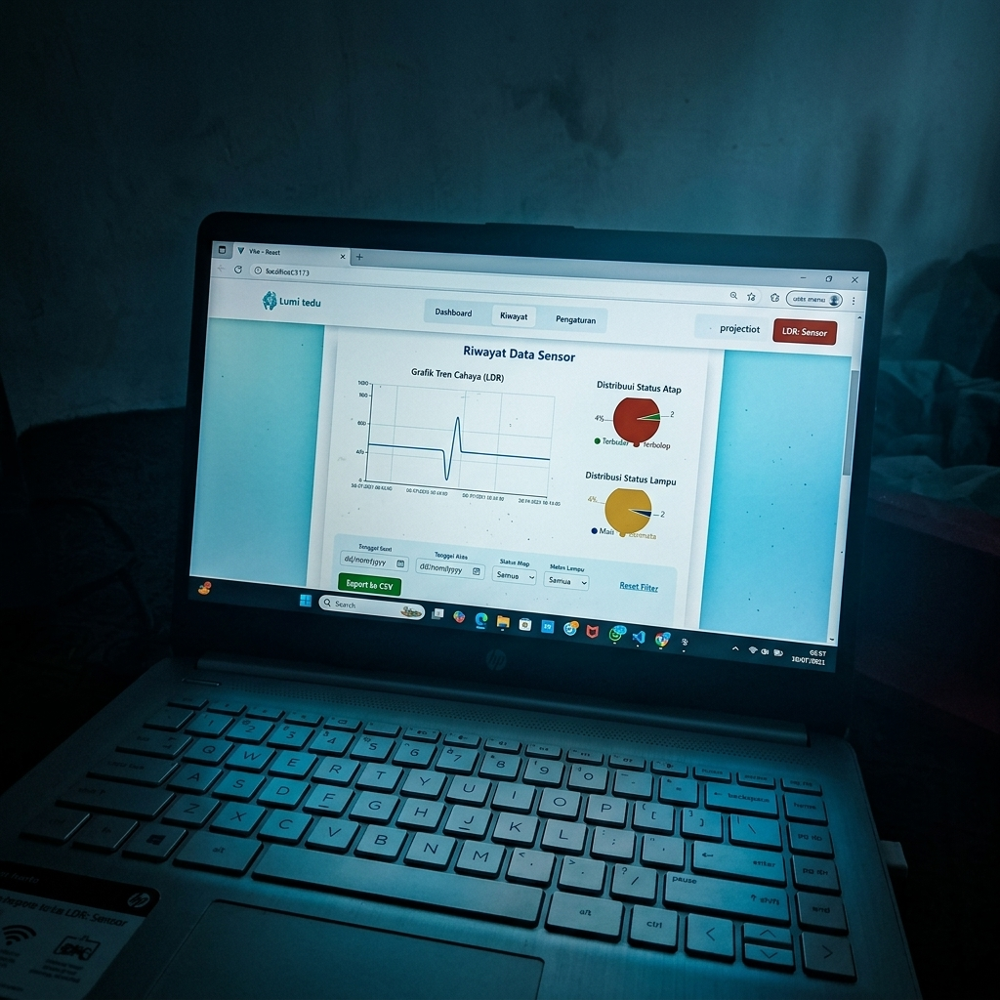
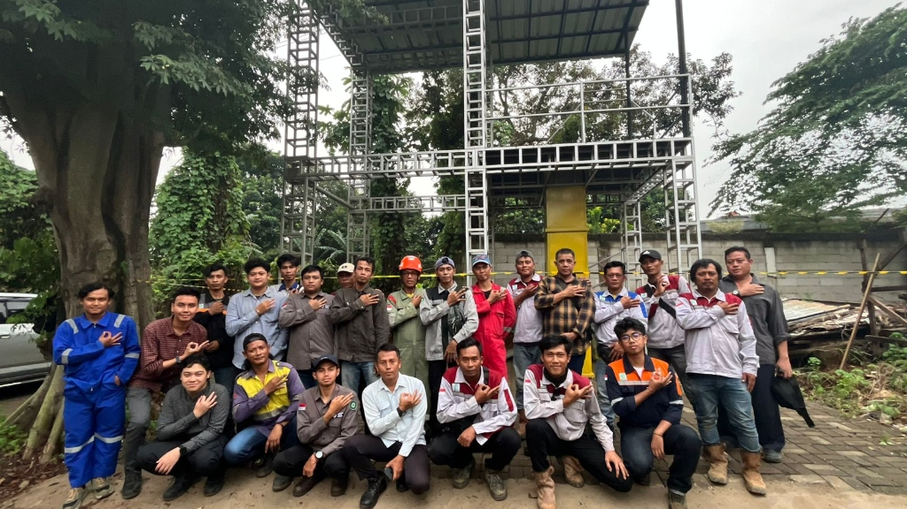
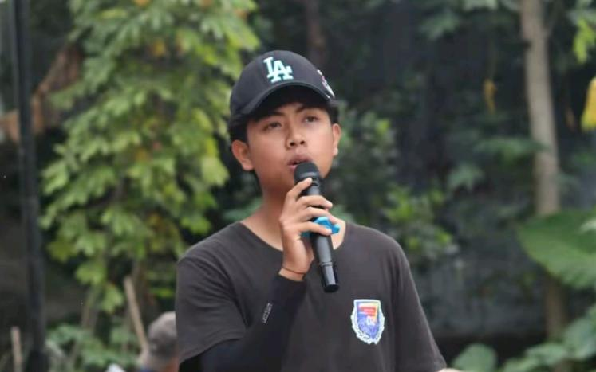

Halo, saya
Mahasiswa semester 7 program studi Informatika di Universitas Bina Sarana Informatika. Memadukan keahlian teknis pengembangan IoT & integrasi web dengan rekam jejak manajerial sebagai PIC operasional pelatihan sertifikasi K3.

Tentang Saya
Kombinasi kemampuan analitis teknologi dengan keterampilan kepemimpinan tim
Saya adalah mahasiswa semester 7 program studi Informatika dengan kemampuan analitis dan pemecahan masalah yang tajam. Saya memadukan keahlian teknis dalam pengembangan IoT, aplikasi digital, dan integrasi web dengan rekam jejak manajerial sebagai PIC operasional pelatihan sertifikasi K3 di PT Lintas Pengembangan Manajemen Indonesia.
Teruji dalam memimpin tim pada berbagai acara berskala besar, saya memiliki komitmen penuh untuk mengombinasikan keterampilan kepemimpinan dan IT guna menciptakan solusi yang inovatif serta efisien di dunia kerja.
Keahlian
Kemampuan teknis dan soft skills sesuai kompetensi profesional
Riwayat & Studi
Perjalanan akademis serta keterlibatan profesional dan organisasi
Portofolio
Showcase proyek teknis dan kepemimpinan dengan pendekatan Problem — Action — Result

Web DevelopmentPerusahaan memerlukan sistem otomatisasi presensi terintegrasi untuk mencegah kecurangan (titip absen), mengelola dispensasi dinas luar, serta menghitung upah lembur legal (PP No. 35/2021) dan perhitungan pajak progresif PPh 21 secara akurat.
Membangun web HRIS menggunakan Next.js 16 (App Router) & TypeScript. Mengimplementasikan geofencing radius GPS (150m), bypass presensi dinas luar, swafoto real-time, database PostgreSQL via Drizzle ORM, autentikasi NextAuth.js v5 (JWT Strategy), serta menyusun algoritma payroll & PPh 21.
Sistem berhasil memproses presensi karyawan secara aman dan real-time menggunakan Bun, mengotomatisasi pengunggahan bukti transfer gaji, menyederhanakan workflow administrasi HRD, dan memungkinkan pengunduhan slip gaji secara mandiri.
• Admin: admin@admin.com / admin123
• HRD: hr@hr.com / hr123
• Karyawan: employee@employee.com / employee123

Teknologi & IoTDibutuhkan sistem otomatisasi berbasis sensor untuk membaca data intensitas cahaya lingkungan secara real-time dan menerjemahkannya ke dalam aksi mikrokontroler.
Menulis kode pemrograman Arduino, merancang logika pemrosesan data sensor LDR (Light Dependent Resistor), mengonfigurasi batas ambang intensitas cahaya, dan mengunggahnya ke perangkat keras.
Sistem berhasil membaca data lingkungan secara stabil dan memicu aksi dinamis (seperti menyalakan/mematikan lampu) dengan tingkat respons yang instan.

ManajerialKoordinasi alur administrasi, komunikasi instruktur, dan logistik peserta dalam pelatihan sertifikasi K3 yang rentan mengalami hambatan informasi.
Mengambil kendali sebagai koordinator operasional (PIC). Menjadi jembatan komunikasi utama, mengelola administrasi berkas kelulusan, dan menyusun laporan evaluasi pasca-kegiatan.
Penyelenggaraan pelatihan berjalan lancar tanpa kendala administratif, laporan evaluasi selesai tepat waktu, dan dokumentasi kelulusan peserta terdistribusi secara akurat.

ManajerialMengorganisasikan kepanitiaan besar untuk melaksanakan rangkaian kegiatan warga dengan keterbatasan alokasi waktu dan anggaran.
Memimpin perencanaan acara, merancang pembagian anggaran secara transparan, serta mengarahkan koordinasi tim panitia di lapangan agar pengerjaan efisien.
Acara terlaksana dengan sukses dan meriah, dihadiri oleh warga secara antusias dengan sisa anggaran yang dikelola dengan baik.
Kontak
Hubungi saya untuk berkolaborasi dalam pengembangan IoT, operasional event, atau integrasi digital.
Saya terbuka untuk diskusi peluang magang, proyek freelance IoT / web, serta kolaborasi manajemen kegiatan.